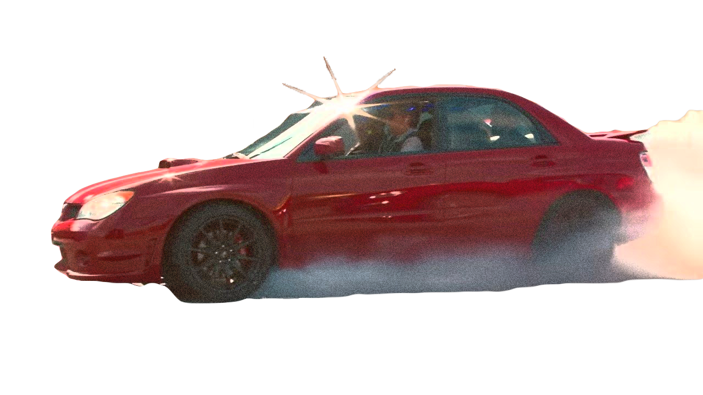

Synopsis
Baby, a music loving orphan...also happens to be the prodigiously talented go-to getaway driver for heist mastermind Doc. With the perfect soundtrack picked out for each and every job, Baby ensures Doc's violent, bank-robbing cronies, including Buddy, Bats and Darling, get in and out of Dodge before it's too late. He's not in it for the long haul though, hoping to nail one last job before riding off into the sunset with beautiful diner waitress Debora. Easier said than done.
© 2024, Valeska Aleman. This is a fictitious web page created solely for the purpose of education and training. All products and people associated with this web page are also fictitious. Any resemblance to real brands, products, or people is purely coincidental. Information provided about the product is also fictitious and should not be construed to be representative of actual products on the market in a similar product category.